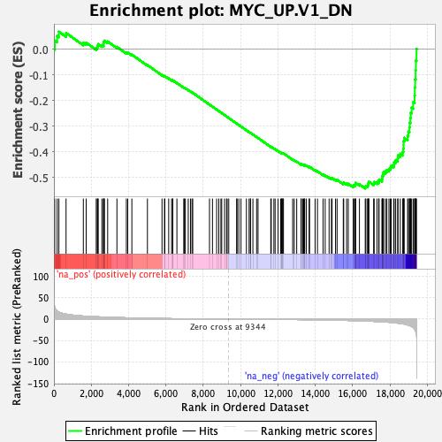
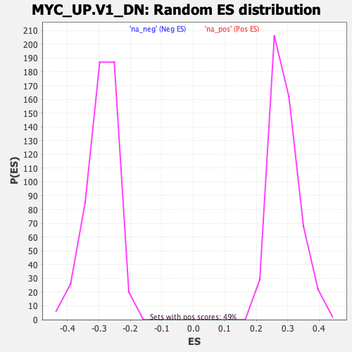

| | | Dataset | DE_genes |
| Phenotype | NoPhenotypeAvailable |
| Upregulated in class | na_neg |
| GeneSet | MYC_UP.V1_DN |
| Enrichment Score (ES) | -0.5433045 |
| Normalized Enrichment Score (NES) | -1.8631061 |
| Nominal p-value | 0.0 |
| FDR q-value | 0.0031427427 |
| FWER p-Value | 0.006 |
Table: GSEA Results Summary

Fig 1: Enrichment plot: MYC_UP.V1_DN
Profile of the Running ES Score & Positions of GeneSet Members on the Rank Ordered List
| SYMBOL | RANK IN GENE LIST | RANK METRIC SCORE | RUNNING ES | CORE ENRICHMENT | | 1 | MIGA2 | 45 | 27.915 | 0.0333 | No |
| 2 | TLR2 | 173 | 19.395 | 0.0515 | No |
| 3 | HEG1 | 266 | 16.718 | 0.0680 | No |
| 4 | CCL20 | 650 | 11.710 | 0.0631 | No |
| 5 | PSMC3IP | 1576 | 7.193 | 0.0244 | No |
| 6 | CCDC82 | 1727 | 6.762 | 0.0252 | No |
| 7 | GALNTL6 | 2266 | 5.509 | 0.0044 | No |
| 8 | PBX3 | 2321 | 5.400 | 0.0084 | No |
| 9 | CYP4F29P | 2343 | 5.369 | 0.0142 | No |
| 10 | NR6A1 | 2374 | 5.301 | 0.0194 | No |
| 11 | C1orf159 | 2570 | 4.951 | 0.0156 | No |
| 12 | GINS1 | 2659 | 4.769 | 0.0172 | No |
| 13 | PAK3 | 2661 | 4.768 | 0.0232 | No |
| 14 | ACAT2 | 2670 | 4.748 | 0.0288 | No |
| 15 | CXCL3 | 2707 | 4.686 | 0.0329 | No |
| 16 | CDCA8 | 2879 | 4.399 | 0.0297 | No |
| 17 | COP1 | 3375 | 3.672 | 0.0087 | No |
| 18 | ZNF789 | 3881 | 3.069 | -0.0135 | No |
| 19 | CDKL5 | 3954 | 2.983 | -0.0135 | No |
| 20 | MISP | 4175 | 2.728 | -0.0214 | No |
| 21 | SAMD9 | 5009 | 1.922 | -0.0621 | No |
| 22 | PPARD | 5790 | 1.355 | -0.1008 | No |
| 23 | MST1L | 5925 | 1.279 | -0.1061 | No |
| 24 | KATNAL1 | 5938 | 1.273 | -0.1051 | No |
| 25 | IRAK2 | 6148 | 1.146 | -0.1145 | No |
| 26 | ARRDC3 | 6304 | 1.047 | -0.1212 | No |
| 27 | LINC00173 | 6359 | 1.013 | -0.1227 | No |
| 28 | GAMT | 6366 | 1.008 | -0.1217 | No |
| 29 | FBXO27 | 6588 | 0.895 | -0.1320 | No |
| 30 | SPTB | 6955 | 0.714 | -0.1501 | No |
| 31 | ABHD3 | 6991 | 0.698 | -0.1510 | No |
| 32 | RAP1A | 7040 | 0.677 | -0.1526 | No |
| 33 | GRID1 | 7195 | 0.601 | -0.1598 | No |
| 34 | AKR1C3 | 7316 | 0.557 | -0.1653 | No |
| 35 | NBEAL1 | 7395 | 0.529 | -0.1687 | No |
| 36 | SERPINB1 | 7437 | 0.512 | -0.1702 | No |
| 37 | WDR47 | 8334 | 0.221 | -0.2163 | No |
| 38 | ZNF414 | 8493 | 0.179 | -0.2243 | No |
| 39 | MICAL1 | 8717 | 0.129 | -0.2357 | No |
| 40 | NGFR | 8833 | 0.101 | -0.2415 | No |
| 41 | PC | 8945 | 0.074 | -0.2472 | No |
| 42 | KMT2D | 8989 | 0.066 | -0.2493 | No |
| 43 | ATXN7L3 | 9143 | 0.037 | -0.2572 | No |
| 44 | VAMP1 | 9250 | 0.020 | -0.2627 | No |
| 45 | LIF-AS2 | 9280 | 0.014 | -0.2642 | No |
| 46 | MN1 | 9365 | -0.004 | -0.2685 | No |
| 47 | WNT9A | 9788 | -0.076 | -0.2903 | No |
| 48 | SRGAP2C | 9813 | -0.081 | -0.2914 | No |
| 49 | C16orf74 | 9906 | -0.103 | -0.2961 | No |
| 50 | C1orf54 | 10022 | -0.130 | -0.3019 | No |
| 51 | SANBR | 10312 | -0.205 | -0.3166 | No |
| 52 | RNF152 | 10454 | -0.241 | -0.3236 | No |
| 53 | JOSD1 | 10525 | -0.255 | -0.3269 | No |
| 54 | SRGAP2B | 10530 | -0.256 | -0.3268 | No |
| 55 | B9D2 | 10659 | -0.289 | -0.3330 | No |
| 56 | WNT5B | 10858 | -0.343 | -0.3429 | No |
| 57 | STPG1 | 10934 | -0.366 | -0.3463 | No |
| 58 | FGD2 | 11616 | -0.576 | -0.3808 | No |
| 59 | BCL9 | 11643 | -0.583 | -0.3814 | No |
| 60 | HOXC4 | 11783 | -0.627 | -0.3878 | No |
| 61 | HOXB2 | 11849 | -0.649 | -0.3904 | No |
| 62 | KRT80 | 12007 | -0.696 | -0.3976 | No |
| 63 | S100A8 | 12143 | -0.742 | -0.4037 | No |
| 64 | CD1D | 12190 | -0.758 | -0.4051 | No |
| 65 | ZNF334 | 12205 | -0.764 | -0.4048 | No |
| 66 | PLEKHG2 | 12253 | -0.787 | -0.4063 | No |
| 67 | CLIP2 | 12260 | -0.789 | -0.4056 | No |
| 68 | IL1R1 | 12296 | -0.805 | -0.4064 | No |
| 69 | S100A9 | 12789 | -1.013 | -0.4306 | No |
| 70 | LYPD3 | 12872 | -1.050 | -0.4335 | No |
| 71 | NDUFV1-DT | 13006 | -1.103 | -0.4390 | No |
| 72 | BCAR1 | 13239 | -1.206 | -0.4495 | No |
| 73 | REC8 | 13249 | -1.210 | -0.4484 | No |
| 74 | TNFAIP2 | 13330 | -1.258 | -0.4509 | No |
| 75 | TRPM4 | 13376 | -1.283 | -0.4516 | No |
| 76 | SLC6A14 | 13419 | -1.309 | -0.4521 | No |
| 77 | H2AC6 | 13435 | -1.319 | -0.4512 | No |
| 78 | PBX4 | 13525 | -1.373 | -0.4541 | No |
| 79 | SPNS3 | 13673 | -1.454 | -0.4598 | No |
| 80 | ARNTL | 13692 | -1.470 | -0.4589 | No |
| 81 | PDK2 | 13991 | -1.667 | -0.4722 | No |
| 82 | OR2A7 | 14118 | -1.755 | -0.4765 | No |
| 83 | NID2 | 14417 | -1.976 | -0.4894 | No |
| 84 | RNF19A | 14531 | -2.061 | -0.4927 | No |
| 85 | SDR16C5 | 14741 | -2.225 | -0.5007 | No |
| 86 | PODN | 14866 | -2.336 | -0.5041 | No |
| 87 | TTC7B | 14900 | -2.362 | -0.5028 | No |
| 88 | SPOCD1 | 15085 | -2.515 | -0.5091 | No |
| 89 | ZFTA | 15168 | -2.589 | -0.5101 | No |
| 90 | TUBA1A | 15500 | -2.941 | -0.5235 | No |
| 91 | GAS2L2 | 15524 | -2.969 | -0.5209 | No |
| 92 | RUSC1-AS1 | 15680 | -3.156 | -0.5249 | No |
| 93 | ZNF236 | 15768 | -3.243 | -0.5253 | No |
| 94 | PTK2B | 16031 | -3.587 | -0.5343 | No |
| 95 | HIP1 | 16061 | -3.628 | -0.5311 | No |
| 96 | AGER | 16133 | -3.719 | -0.5301 | No |
| 97 | SMURF1 | 16151 | -3.739 | -0.5262 | No |
| 98 | OSBP2 | 16157 | -3.749 | -0.5216 | No |
| 99 | FGD6 | 16366 | -4.027 | -0.5273 | No |
| 100 | RHBDL2 | 16676 | -4.513 | -0.5375 | Yes |
| 101 | TP53INP1 | 16710 | -4.567 | -0.5334 | Yes |
| 102 | GRHL1 | 16799 | -4.709 | -0.5320 | Yes |
| 103 | CLSTN3 | 16838 | -4.762 | -0.5279 | Yes |
| 104 | PJA2 | 16845 | -4.774 | -0.5221 | Yes |
| 105 | DUSP18 | 16873 | -4.832 | -0.5173 | Yes |
| 106 | GJB5 | 17127 | -5.319 | -0.5236 | Yes |
| 107 | RAB4B | 17155 | -5.383 | -0.5182 | Yes |
| 108 | ATL1 | 17306 | -5.745 | -0.5186 | Yes |
| 109 | MMP1 | 17400 | -5.946 | -0.5159 | Yes |
| 110 | PRRT2 | 17416 | -5.979 | -0.5090 | Yes |
| 111 | PPM1N | 17572 | -6.352 | -0.5089 | Yes |
| 112 | DEPP1 | 17588 | -6.390 | -0.5016 | Yes |
| 113 | SKIL | 17593 | -6.403 | -0.4936 | Yes |
| 114 | TRIM56 | 17634 | -6.503 | -0.4874 | Yes |
| 115 | IL18 | 17656 | -6.554 | -0.4801 | Yes |
| 116 | ADHFE1 | 17760 | -6.835 | -0.4767 | Yes |
| 117 | POGZ | 17833 | -7.079 | -0.4714 | Yes |
| 118 | SYNE3 | 17947 | -7.434 | -0.4678 | Yes |
| 119 | EREG | 18021 | -7.744 | -0.4617 | Yes |
| 120 | ANGPTL4 | 18070 | -7.941 | -0.4540 | Yes |
| 121 | MEGF6 | 18203 | -8.469 | -0.4501 | Yes |
| 122 | NTF4 | 18225 | -8.566 | -0.4402 | Yes |
| 123 | GPRC5A | 18307 | -9.001 | -0.4329 | Yes |
| 124 | BCO2 | 18419 | -9.537 | -0.4265 | Yes |
| 125 | ZNF467 | 18428 | -9.577 | -0.4147 | Yes |
| 126 | PTPRE | 18555 | -10.184 | -0.4082 | Yes |
| 127 | RNASE4 | 18687 | -11.081 | -0.4009 | Yes |
| 128 | MAP3K6 | 18714 | -11.331 | -0.3878 | Yes |
| 129 | PRSS33 | 18727 | -11.436 | -0.3738 | Yes |
| 130 | PLEKHA2 | 18728 | -11.440 | -0.3592 | Yes |
| 131 | ASAP3 | 18765 | -11.706 | -0.3461 | Yes |
| 132 | C11orf80 | 18946 | -13.803 | -0.3379 | Yes |
| 133 | MTMR11 | 18987 | -14.269 | -0.3217 | Yes |
| 134 | TEP1 | 19044 | -14.958 | -0.3055 | Yes |
| 135 | NYNRIN | 19060 | -15.170 | -0.2870 | Yes |
| 136 | KLF12 | 19094 | -16.080 | -0.2681 | Yes |
| 137 | GBP3 | 19113 | -16.387 | -0.2482 | Yes |
| 138 | AGO4 | 19162 | -17.578 | -0.2282 | Yes |
| 139 | NRP1 | 19245 | -20.025 | -0.2069 | Yes |
| 140 | LMNTD2-AS1 | 19321 | -23.545 | -0.1808 | Yes |
| 141 | LMTK3 | 19332 | -24.695 | -0.1498 | Yes |
| 142 | ADGRF1 | 19352 | -25.820 | -0.1178 | Yes |
| 143 | CPNE2 | 19375 | -28.640 | -0.0824 | Yes |
| 144 | SLITRK6 | 19388 | -30.188 | -0.0445 | Yes |
| 145 | TGM2 | 19423 | -36.858 | 0.0008 | Yes |
Table: GSEA details [plain text format]

Fig 2: MYC_UP.V1_DN: Random ES distribution
Gene set null distribution of ES for MYC_UP.V1_DN